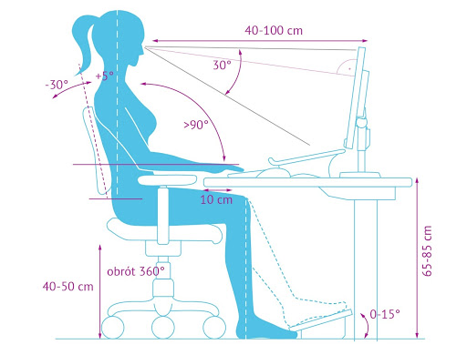

Instrukcja BHP przy obsłudze komputera i drukarki.
Przed przystąpieniem do pracy pracownik powinien:
1. Przewietrzyć pomieszczenie, w którym znajduje się stanowisko pracy
2. Skontrolować wyposażenie stanowiska pracy
3.Dostosować biurko, krzesło i podnóżek do wymiarów swojego ciała
4. Przygotować komputer do pracy przez:
- podłączenie go do sieci zasilające,
- regulację jasności i kontrastu pomiędzy znakami a tłem w zależności od potrzeb i aktualnych warunków otoczenia
5. Przygotować potrzebne dokumenty oraz programy użytkowe do pracy
Po zakończeniu pracy pracownik powinien:
1. Wyłączyć komputer, monitor, drukarkę i pozostałe urządzenia oraz sprzęt stanowiskowy zasilany energią elektryczną
2. Uporządkować i sprzątnąć stanowisko pracy
3. Schować dyskietki, pozamykać szafy i biurko
4. Sprawdzić, czy pozostawiony sprzęt komputerowy nie stwarza jakichkolwiek zagrożeń i czy jest on prawidłowo
zabezpieczony przed uruchomieniem przez osoby postronne.
Zabrania się:
1. Spożywania posiłków podczas pracy na stanowisku komputerowym,
2. Palenia tytoniu w pomieszczeniach pracy z komputerem,
3. Samowolnego naprawiania urządzeń komputerowych, sprzętu oraz wyposażenia zasilanego energią elektryczną,
4. Używania do czyszczenia komputera i drukarki rozpuszczalników lub innych płynów łatwopalnych,
5. Zezwalania na obsługę komputera osobom nieupoważnionym.
W trakcie wykonywania pracy pracownik powinien:
1. Komputer i drukarkę obsługiwać tylko zgodnie z instrukcją obsługi zawartą w dokumentacji producenta, nie stwarzając
zagrożeń przez ich niewłaściwe użytkowanie
2. Zapewnić przed klawiaturą wystarczającą przestrzeń do podparcia rąk i dłoni
3. Stosować odległość ekranu monitora od oczu wynoszącą od 400 do 750 mm
4. Nie dopuścić do komputera osób nieupoważnionych.
